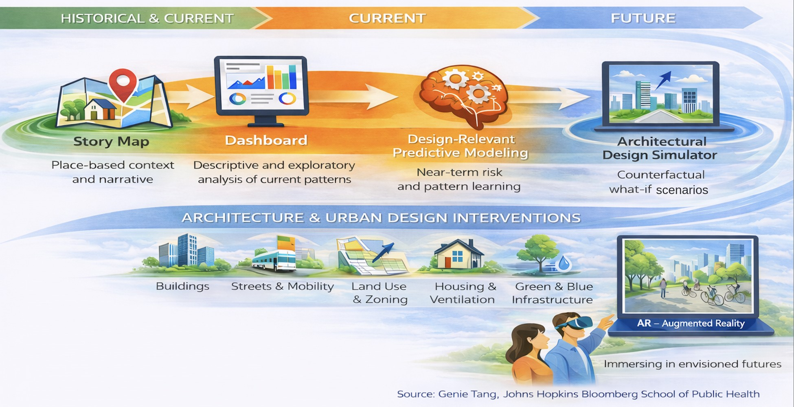

Spatial Health Informatics
Using spatial statistics, public health surveillance data, and interactive tools to understand where health risks concentrate and how the places people live influence their health.空間統計、公衆衛生サーベイランスデータ、インタラクティブなツールを使い、健康リスクがどこに集中しているか、また人々が暮らす場所が健康にどう影響するかを明らかにします。
Frameworkフレームワーク

The dashboard component, built for the Richmond case study:リッチモンドの事例研究のために作ったダッシュボード：
Open the Richmond Spatial Decision Intelligence Explorer ↗リッチモンド空間意思決定インテリジェンス・エクスプローラーを開く ↗
Focus Areas重点分野
Spatial Statistics空間統計
Clustering and hotspot methods such as Moran's I, LISA, and Getis-Ord Gi* to find where outcomes concentrate.モランI、LISA、Getis-Ord Gi*などのクラスター・ホットスポット手法で、健康アウトカムが集中する場所を見つけます。
Housing and Health Equity住宅と健康の公平性
How housing conditions, environmental burden, and social vulnerability relate to health across neighborhoods.住宅の状態、環境負荷、社会的脆弱性が、地域ごとの健康とどう関係しているかを調べます。
Surveillance and Decision Supportサーベイランスと意思決定支援
Turning public health surveillance data into maps and dashboards that support decisions.公衆衛生サーベイランスデータを、意思決定に役立つ地図やダッシュボードにします。
Interactive Visualizationインタラクティブな可視化
Web-based charts and maps built in Python and ArcGIS so findings can be explored, not only read.PythonとArcGISでウェブ上のグラフや地図を作り、結果を読むだけでなく自分で探れるようにします。
Projectsプロジェクト
01Asthma and Environmental Justice in Contra Costa Countyコントラコスタ郡のぜんそくと環境正義
Spatial analysis of asthma prevalence against PM2.5, NO2, and the CDC/ATSDR Environmental Justice Index. Asthma showed significant spatial clustering (global Moran's I = 0.31, p < 0.01), with high-high clusters along the Richmond and Pittsburg corridor. The interactive explorer rebuilds the analysis on the 2024 index (global Moran's I = 0.69, queen contiguity, 999 permutations) across the 241 county tracts, with the City of Richmond outlined: exposure and burden layers, LISA cluster maps, a bivariate map, and priority tracts where exposure and burden coincide.ぜんそくの有病率を、PM2.5、NO2、CDC/ATSDRの環境正義指数（Environmental Justice Index）と比べた空間分析です。ぜんそくには有意な空間的集積が見られ（全体のモランI = 0.31、p < 0.01）、リッチモンドからピッツバーグにかけての地域に高-高クラスターがありました。インタラクティブなエクスプローラーでは、2024年版の指数を使い、郡内の241の国勢調査区で分析をやり直しています（全体のモランI = 0.69、クイーン隣接、999回の並べ替え）。リッチモンド市の境界を示し、曝露と負荷のレイヤー、LISAクラスター地図、2変量地図、曝露と負荷がともに高い優先地区を表示します。
Open the explorer ↗エクスプローラーを開く ↗02COVID-19 Surveillance ExplorerCOVID-19サーベイランス・エクスプローラー
An interactive comparison of reported COVID-19 cases and deaths across countries, built on the Johns Hopkins CSSE global time series. Users add countries, switch between daily and cumulative counts and rates per 100,000, and read the data through a world choropleth, spatial cluster analysis, and EARS C2 alerts, the aberration-detection method used in syndromic surveillance.ジョンズ・ホプキンス大学CSSEの世界の時系列データをもとに、国ごとに報告されたCOVID-19の感染者数と死亡者数を比べるインタラクティブなツールです。国を追加し、日別と累計、人口10万人あたりの率を切り替えながら、世界の塗り分け地図、空間クラスター分析、EARS C2アラート（症候群サーベイランスで使われる異常検知の方法）でデータを読めます。
Open the explorer ↗エクスプローラーを開く ↗03Environmental Exposure and Independent Living Need in Californiaカリフォルニア州の環境曝露と自立生活のニーズ
A statewide PM2.5 exposure surface built by ordinary kriging from 127 EPA monitors, crossed with a census tract need index combining disability, living alone, vehicle access, and English proficiency. The analysis identifies 1,112 of 9,048 California tracts where predicted exposure and need are both high.EPAの127の測定局から通常クリギングで作った州全体のPM2.5曝露面を、障害、一人暮らし、車の利用、英語力を組み合わせた国勢調査区のニーズ指数と重ねました。予測曝露とニーズがともに高い地区を、カリフォルニア州の9,048地区のうち1,112地区特定しています。
Open project ↗プロジェクトを開く ↗04Automated Surveillance-to-Decision Pipelineサーベイランスから意思決定までの自動化パイプライン
A modular pipeline that runs on a schedule, retrieves surveillance data, applies a tiered alert framework, writes the report, and delivers it with an automatic notification, with no manual steps. It is in daily production use for a public health surveillance program, and the same five-step structure was adapted as a prototype for Japan's national influenza surveillance data.決まった時間に動き、サーベイランスデータを取得し、段階的なアラートの枠組みを当てはめ、レポートを書き、自動通知とともに届けるモジュール式のパイプラインです。手作業はありません。公衆衛生サーベイランスの業務で毎日使われており、同じ5段階の構成を、日本の全国インフルエンザ・サーベイランスデータ向けの試作版にも応用しました。
Open project ↗プロジェクトを開く ↗05Influenza Surveillance Research in Japan日本のインフルエンザ・サーベイランス研究
Two conference abstracts with clinicians in Japan. One compares near real-time electronic health record data on pediatric influenza with national sentinel surveillance. The other evaluates an automated decision support framework for Japan's weekly influenza data: across seven seasons, its first EARS C2 alert came before the epidemic threshold every time, by a median of two weeks.日本の臨床医との2つの学会抄録です。1つは、小児インフルエンザのほぼリアルタイムの電子カルテデータを、全国の定点サーベイランスと比べたものです。もう1つは、日本の週ごとのインフルエンザデータに対する自動意思決定支援の枠組みを評価したものです。7シーズンを通じて、最初のEARS C2アラートは毎回流行開始の基準より先に出ており、その差の中央値は2週間でした。
Open project ↗プロジェクトを開く ↗05aJapan IDWR Surveillance Explorer (all 19 diseases)日本IDWRサーベイランス・エクスプローラー（全19疾患）
The same weekly view for all 19 IDWR sentinel diseases, by prefecture, with maps of the Kanto and Kansai areas and all of Japan, and spatial clustering. Public IDWR data only.同じ週ごとの表示を、IDWRの定点把握19疾患すべてについて都道府県別に見られます。関東・関西と日本全体の地図、空間クラスタリングもあります。公開されているIDWRデータのみを使用しています。
Open the explorer ↗エクスプローラーを開く ↗05bJapan Influenza Surveillance Explorer (influenza only)日本インフルエンザ・サーベイランス・エクスプローラー（インフルエンザのみ）
Weekly influenza reports per sentinel site for all 47 prefectures, with EARS C2 alerts, lead times and false alarms, maps of the Kanto and Kansai areas and all of Japan, and spatial clustering. Public IDWR data only.全47都道府県の定点あたりインフルエンザ報告数を週ごとに表示します。EARS C2アラート、先行期間と誤警報、関東・関西と日本全体の地図、空間クラスタリングもあります。公開されているIDWRデータのみを使用しています。
Open the explorer ↗エクスプローラーを開く ↗06Interactive Story Mapインタラクティブ・ストーリーマップ
An ArcGIS story map that combines maps and narrative to present public health data in a form people can explore.地図とナラティブを組み合わせ、公衆衛生データを自分で探れる形で伝えるArcGISストーリーマップです。
Open story map ↗ストーリーマップを開く ↗07Public Health Dashboard公衆衛生ダッシュボード
An ArcGIS dashboard that brings public health indicators together in interactive maps and charts for monitoring and decision support.公衆衛生の指標をインタラクティブな地図とグラフにまとめ、モニタリングと意思決定支援に使うArcGISダッシュボードです。
08Disability Inclusion Recommendation Progress Report障害者インクルージョン提言の進捗報告
A prototype quarterly report that turns an advisory committee's recommendation tracker into a visual, accessible format, with status summaries, timelines, and accessibility maps of two university campuses locating services, parking, transit, and sites tied to the recommendations.諮問委員会の提言の進捗管理表を、見やすくアクセシブルな形にした四半期報告の試作版です。状況のまとめ、スケジュール、2つの大学キャンパスのアクセシビリティ地図があり、サービス、駐車場、公共交通、提言に関係する場所を示しています。
Restricted: members only.制限あり：メンバー限定です。
Request access ↗アクセスを申請 ↗09Exposure Lens SingaporeExposure Lens シンガポール
A reproducible spatial analysis of air temperature and PM2.5 readings from Singapore's open government data, testing spatial autocorrelation and local indicators of spatial association, with a clear statement of which methods are valid at this scale.シンガポール政府のオープンデータにある気温とPM2.5の測定値を使った、再現可能な空間分析です。空間的自己相関と局所的空間関連指標（LISA）を検定し、このスケールでどの手法が有効かを示しています。
Open project ↗プロジェクトを開く ↗10Brain Volume Composition脳容積の構成
An interactive Sankey diagram showing how intracranial volume divides across five levels of brain regions, built from MRICloud volumetric data. It demonstrates turning hierarchical data into an explorable web graphic.MRICloudの容積データから作った、頭蓋内容積が5段階の脳領域にどう分かれるかを示すインタラクティブなサンキー図です。階層データを、自分で探れるウェブグラフィックにする例です。
Open project ↗プロジェクトを開く ↗11Housing, Environment, and Health Across Three Cities 3都市における住宅、環境、健康 In development開発中
A comparison of Richmond, California; Cambridge, United Kingdom; and Singapore using open housing, environmental, and health data, applying the same spatial and interactive methods across very different urban settings. The Richmond module is live in the explorer above; the Cambridge and Singapore modules follow.カリフォルニア州リッチモンド、イギリスのケンブリッジ、シンガポールを、住宅、環境、健康のオープンデータで比べます。大きく異なる都市環境に、同じ空間的・インタラクティブな手法を当てはめます。リッチモンドのモジュールは上のエクスプローラーで公開中で、ケンブリッジとシンガポールのモジュールがこれに続きます。